函館
 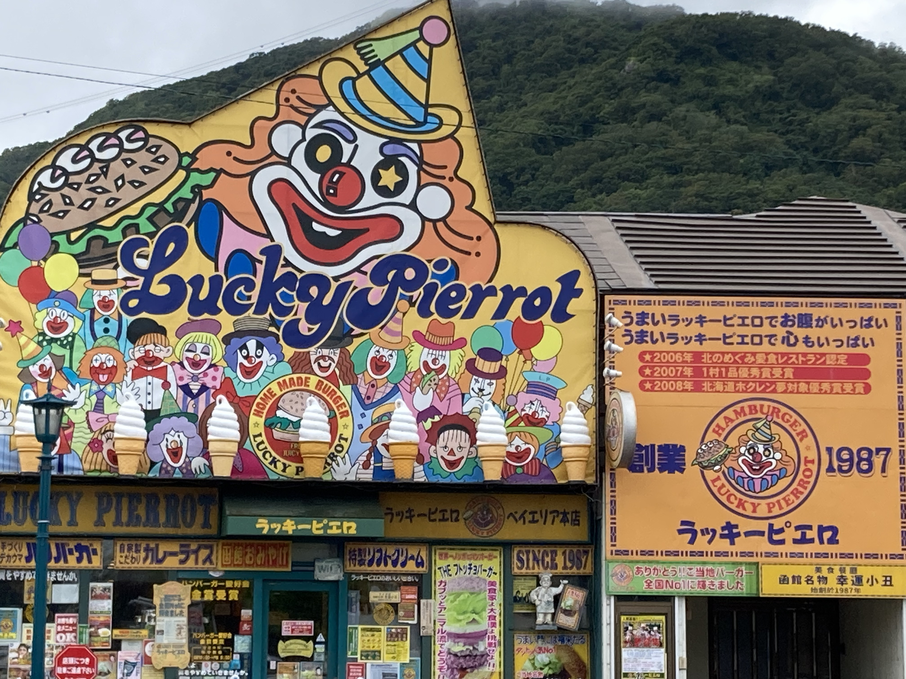
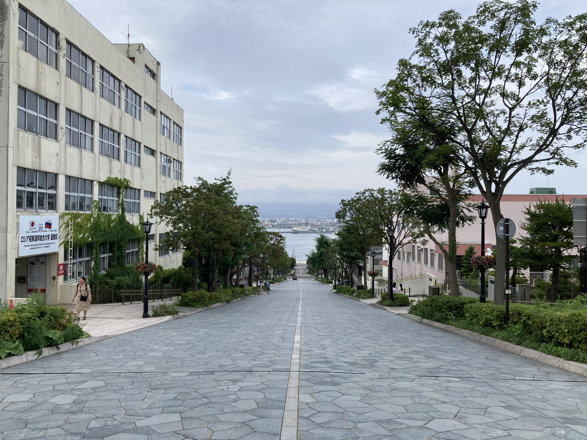
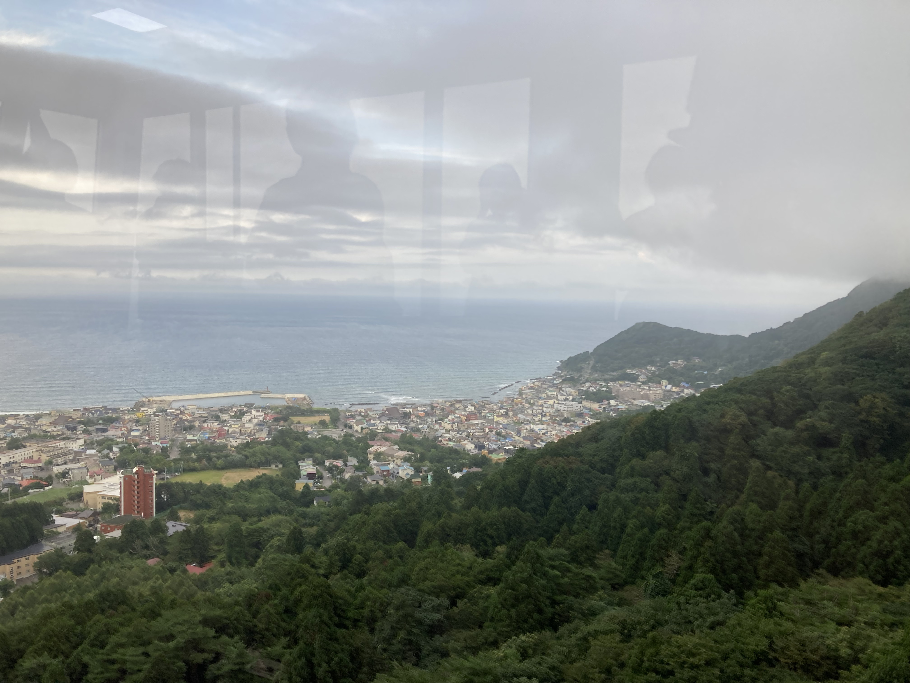
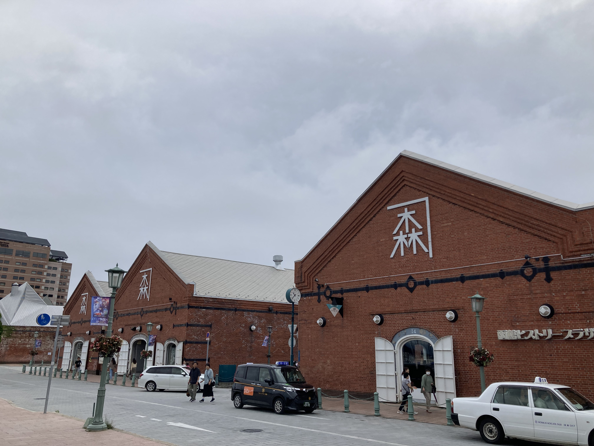
❮
❯
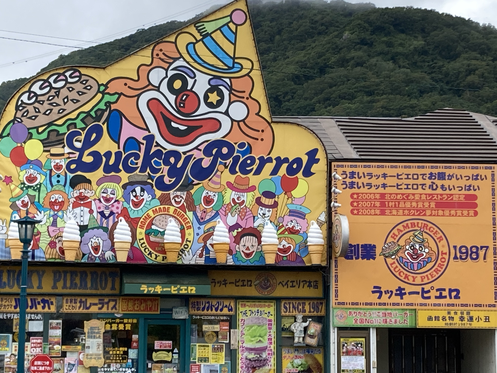
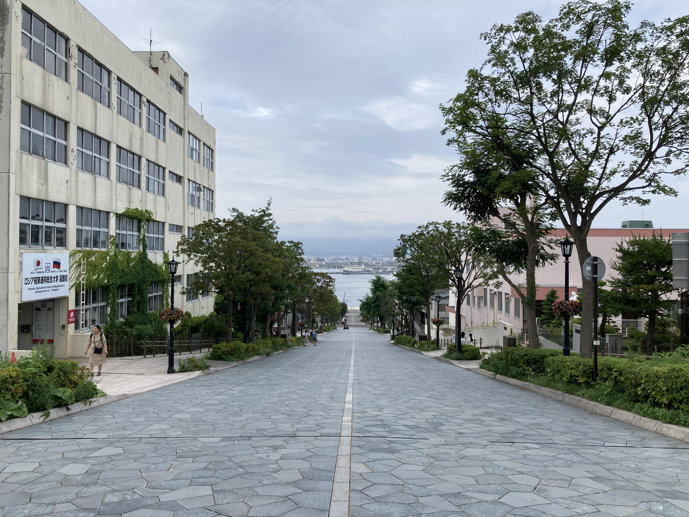
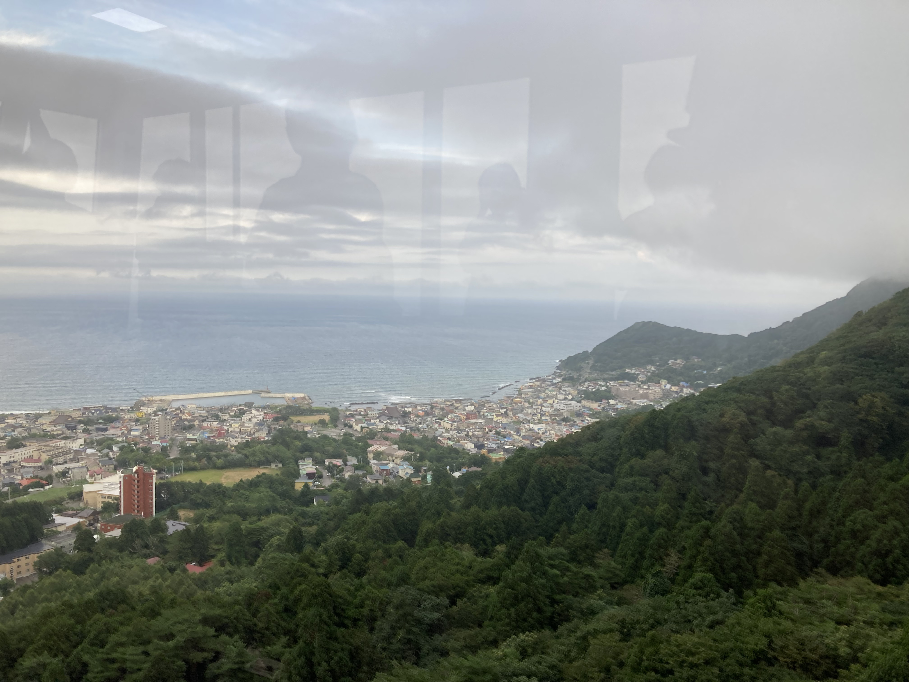
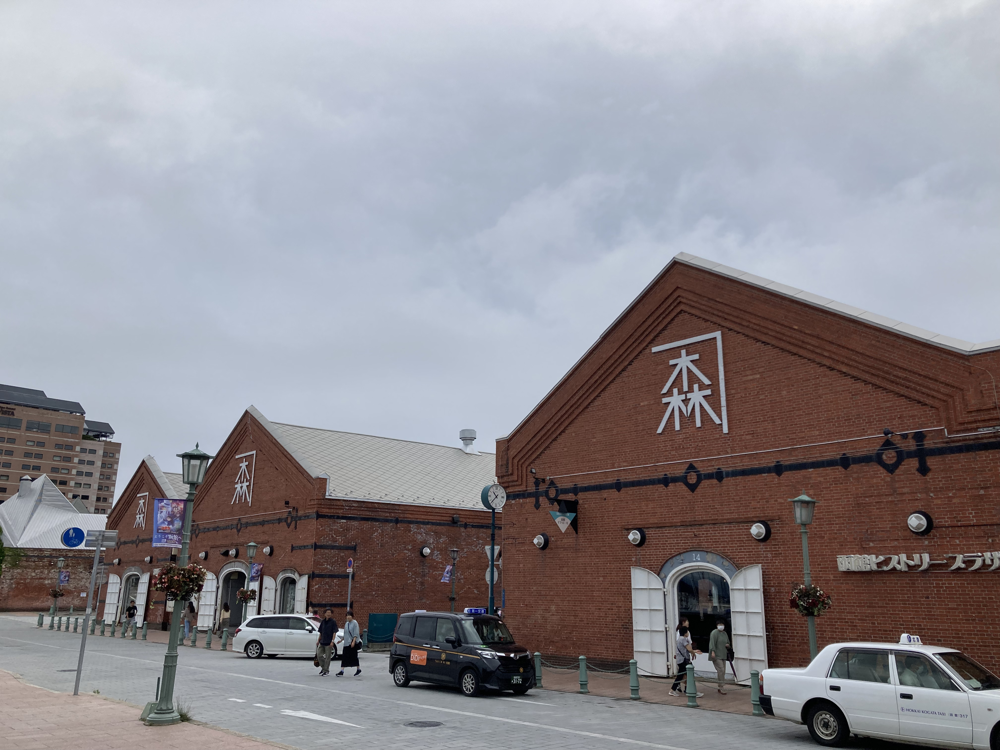
❮
❯
函館的夜景因為起大霧沒看到真的很可惜聽說美不勝收，但是有去到五陵郭塔，伴隨著歷史的痕跡別有一番浪漫，小丑漢堡也是去到函館必試的美食。
札幌作為北海道的中心，擁有北海道別處無法比擬的繁華，也去到了傳說中的貍小路，體驗了札幌的夜生活。
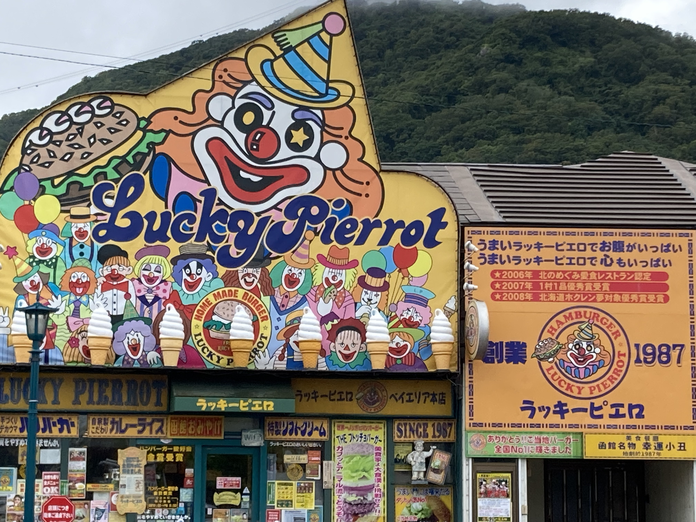
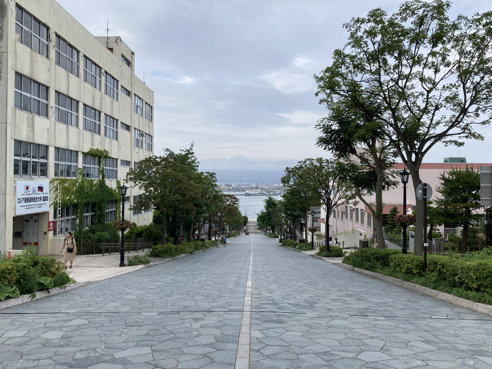
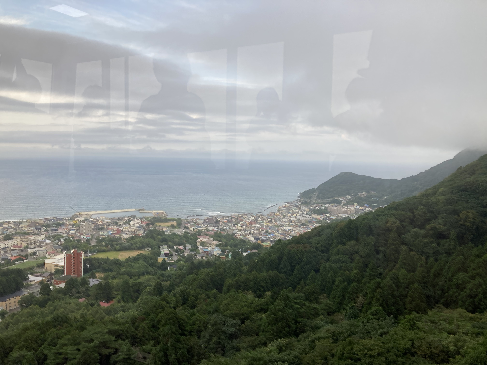
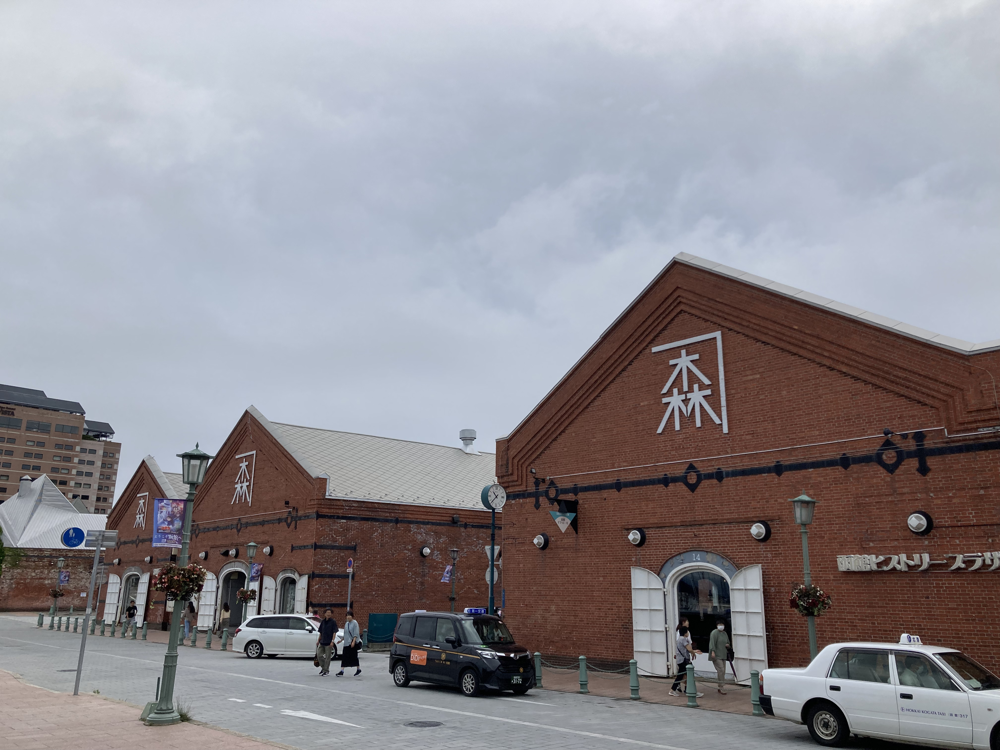
❮
❯
函館的夜景因為起大霧沒看到真的很可惜聽說美不勝收，但是有去到五陵郭塔，伴隨著歷史的痕跡別有一番浪漫，小丑漢堡也是去到函館必試的美食。
洞爺湖的溫泉和寧靜的湖光山色，真的是一個療癒的地方，我們踩著天鵝船遊湖，深刻的感受到湖水的清澈。且在回程時一睹洞爺湖日落的景色，是我這次北海道行最為之驚豔的，此生沒看過如此漂亮的山水。
千歲為北海道重要的機場所在地，我們在那裡租借露營車，對我來說是環北海道旅程的起點也是終點。
在旅遊途中，道之驛對車友來說是最好的歇腳之地。
旭川的山裡有一處由國家經營的自然露營區，我們在那裡住了一夜，並體驗到原湯溫泉，當地為了保護生態此溫泉禁止使用任何沐浴用品。
 ❮
❯
❮
❯
富良野最有名的就是它的花海，在一片紫色的薰衣草海洋中，我品嘗著特別的薰衣草霜淇淋。
美瑛雖為一個小鎮，但卻透漏著濃重的異域風情，有名的青池也是必去的景點。
留言區